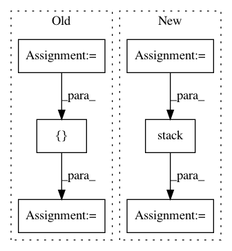

6b48055fdfe3c628833ed26ca394ef2fb1d97f82,niftynet/layer/resampler.py,ResamplerLayer,_resample_nearest,#ResamplerLayer#Any#Any#,58
Before Change
batch_size = in_size[0]
in_spatial_size = in_size[1:-1]
out_size = sample_coords.get_shape().as_list()
out_spatial_size = out_size[1:-1]
out_spatial_rank = infer_spatial_rank(sample_coords)
spatial_coords = self.boundary_func(
tf.round(sample_coords), in_spatial_size)
batch_ids = tf.reshape(
tf.range(batch_size), [batch_size] + [1] * (out_spatial_rank + 1))
batch_ids = tf.tile(batch_ids, [1] + out_spatial_size + [1])
output = tf.gather_nd(
inputs, tf.concat([batch_ids, spatial_coords], -1))
if self.boundary == "ZERO":
scale = 1. / (tf.constant(in_spatial_size, dtype=tf.float32) - 1)
mask = tf.logical_and(
After Change
spatial_coords = self.boundary_func(
tf.round(sample_coords), in_spatial_size)
output = tf.stack([
tf.gather_nd(img, coords) for (img, coords) in
zip(tf.unstack(inputs), tf.unstack(spatial_coords))])
if self.boundary == "ZERO":
scale = 1. / (tf.constant(in_spatial_size, dtype=tf.float32) - 1)
mask = tf.logical_and(
In pattern: SUPERPATTERN
Frequency: 3
Non-data size: 6
Instances
Project Name: NifTK/NiftyNet
Commit Name: 6b48055fdfe3c628833ed26ca394ef2fb1d97f82
Time: 2017-10-26
Author: wenqi.li@ucl.ac.uk
File Name: niftynet/layer/resampler.py
Class Name: ResamplerLayer
Method Name: _resample_nearest
Project Name: GPflow/GPflow
Commit Name: bd1e9c04b48dd5ccca9619d5eaa2595a358bdb08
Time: 2020-01-31
Author: st--@users.noreply.github.com
File Name: gpflow/kernels/statics.py
Class Name: White
Method Name: K
Project Name: OpenNMT/OpenNMT-py
Commit Name: 68fbfd1876c367323acf830736bae1af499cc0fe
Time: 2018-03-07
Author: dengyuntian@gmail.com
File Name: onmt/modules/Transformer.py
Class Name: TransformerDecoder
Method Name: forward